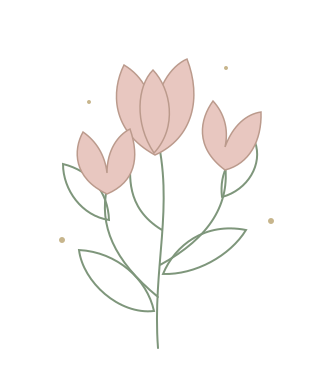

零基礎也能開始
從工具、材料與布料特性開始認識，循序學習染色、剪裁、塑形與組合。
THE ART OF HANDMADE FLOWERS
古典藝術造花
從一片布開始，
親手塑造一朵不凋謝的花。
探索染布與熱燙塑形的細膩工藝，
為日常留下一道屬於自己的優雅風景。
零基礎入門 · 六件主題創作 · 職人指導

鬱金香小燈飾
作品照片待補A BLOOM BEGINS WITH YOU
在染色的深淺、花瓣的弧度之間，
練習觀察自然，也慢慢找到自己的創作節奏。
本課程帶你走進細膩優雅的古典藝術造花世界。從布料的裁剪、染色與暈染開始，運用專業造花燙器塑造花瓣與葉片自然柔美的弧度，再一步步組合成具有個人風格的藝術花飾。
即使沒有手作經驗也能參加。第一堂先使用老師預先染製、裁剪完成的花瓣，熟悉塑形與組合；後續再循序進入染布、剪裁、熱燙塑形與創作的完整過程。
CRAFT & EVERYDAY BEAUTY
從工具、材料與布料特性開始認識，循序學習染色、剪裁、塑形與組合。
練習自然暈染與花瓣剪裁，透過專業燙器，讓平面的布料呈現立體姿態。
從染料濃淡、燙器角度到花型塑造，理解每一個製作環節的細節。
將花飾化為別針、耳飾、植物布框與燈飾，延伸服裝配飾與居家創作的可能。
SIX LESSONS, SIX LITTLE STORIES
從第一朵花開始，累積一份可以配戴、可以欣賞的作品集。
LESSON 01
認識造花工具、布料與染料，從花瓣手扭、塑形到組合，完成第一件造花作品。
工具認識 · 手扭塑形 · 組合LESSON 02
學習裁剪、染色及燙器操作，掌握葉片的自然曲線與層次，完成立體植物布框。
裁剪染色 · 燙器操作 · 葉片造型LESSON 03
從染色、裁剪到熱燙塑形，將細緻的小花轉化為可以實際配戴的花藝飾品。
小花塑形 · 花束組合 · 飾品應用LESSON 04
結合裁剪、染色、縫製與熱燙塑形，製作充滿細節與趣味的草莓造花作品。
縫製 · 熱燙塑形 · 蕾絲搭配LESSON 05
親手進行染色與自然暈染，塑造立體花型並完成花束組合，讓柔美花藝與燈光結合。
自然暈染 · 立體花型 · 燈飾組合LESSON 06
整合裁剪、染色、熱燙塑形與多元素組合技巧，完成細膩優雅的造花耳飾。
綜合技法 · 多元素組合 · 耳飾創作MAKE ROOM FOR YOUR CREATIVITY
無論你想培養生活美感、探索服裝與飾品設計，
或累積個人創作與手作品牌的基礎，
都可以從這裡開始。
不需要造花經驗，只需要一份願意動手的好奇心。
MEET YOUR TEACHER
英華藝術造花工作室創辦人／造花職人
自 2007 年開始學習造花工藝，2012 年成立英華藝術造花工作室並開始授課；多次赴日本進修藝術造花相關工藝，長期投入創作與教學。
創作經驗橫跨藝術造花、服裝配飾及展覽協力製作，並曾教授造花工藝應用於高級訂製婚紗。透過職人經驗，帶領學員理解花朵姿態、色彩與布料之間細膩的關係。
TOOLS & MATERIALS
可調溫燙把、燙墊、各式造花鏝具，以及染料、造花布料、花芯、鐵絲、金屬配件與木製繡框。
布剪刀、鐵絲剪刀、鑷子及錐子等基本工具。
以上為工具與材料費用。學費、開課日期、上課地點及報名方式，請以文大推廣部正式公告為準。
LET YOUR EVERYDAY BLOOM